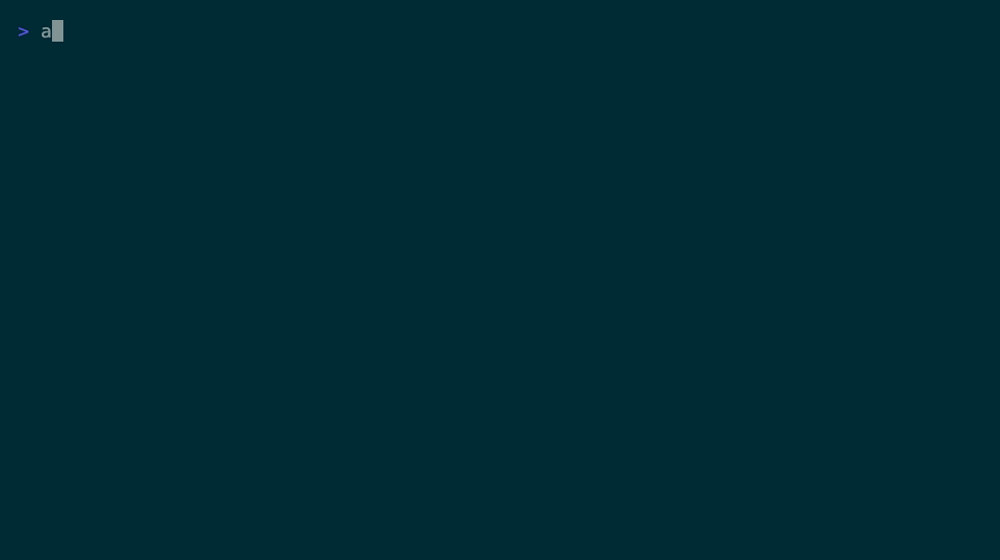

$ ael install Installing AiEconLab for this project... ✓ Core research roles ready ✓ Runtime adapter configured ✓ Advisor, PI, RAs, Referee, Replicator online $ ael talk advisor "What is your role?" advisor I am the AiEconLab advisor, responsible for strategic second opinions on research framing, identification credibility, and publication risk.
Roles
AEL organizes research work around clear responsibilities instead of one overloaded chat context.
PI
Leads scope, dispatch, integration, and final responsibility for the paper.
Advisor
Challenges framing, identification strategy, and long-run research tradeoffs.
RA-Stata
Owns empirical specifications, tables, robustness checks, and Stata reproducibility.
Referee
Reads like a skeptical reviewer before the draft leaves the team.
Install
Install the CLI once, then initialize AEL inside each paper or replication project.
Three commands
curl -fsSL https://ael.zhiwen-wang.com/install.sh | sh cd MyPaperProject ael install
Demo
A short terminal walkthrough of project install and talking to the Advisor role.

Safety
AEL stays scoped to the project and keeps decision rights with the Owner.
Boundaries
- No uploads of project memory, transcripts, or paper files.
- No background daemon or hidden process.
- No automatic approval for submission, data sharing, or authorship changes.
- No modification of unrelated projects.